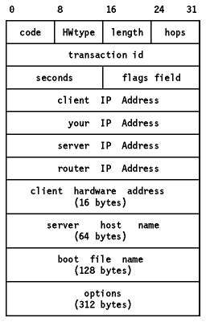

Table of Contents
Table of Contents  DOS
DOS
TCP/IP Tutorial and Technical Overview
DHCP is a proposed standard protocol. Its
status is elective. The current DHCP specifications can be found in
RFC 1541 - Dynamic Host Configuration Protocol and RFC 1533 - DHCP
Options and BOOTP Vendor Extensions.
The Dynamic Host Configuration Protocol (DHCP) provides a framework for
passing configuration information to hosts on a TCP/IP network. DHCP is based
on the BOOTP protocol, adding the capability of automatic allocation of
reusable network addresses and additional configuration options. For
information according to BOOTP please refer to
BOOTstrap Protocol - BOOTP. DHCP participants
can interoperate with BOOTP participants (RFC 1534).
DHCP consists of two components:
- A protocol that delivers host-specific configuration parameters from a DHCP
server to a host.
- A mechanism for the allocation of network addresses to hosts.
IP requires the setting of many parameters within the protocol
implementation software. Because IP can be used on many dissimilar kinds of
network hardware, values for those parameters cannot be guessed at or assumed
to have correct defaults. The use of a distributed address allocation scheme
based on a polling/defense mechanism, for discovery of network addresses
already in use, cannot guarantee unique network addresses because hosts may not
always be able to defend their network addresses.
DHCP supports three mechanisms for IP address allocation:
- Automatic allocation
DHCP assigns a permanent IP address to the host.
- Dynamic allocation
DHCP assigns an IP address for a limited period of time. Such a network
address is called a lease. This is the only mechanism that allows
automatic reuse of addresses that are no longer needed by the host to which it
was assigned.
- Manual allocation
The host's address is assigned by a network administrator.
The format of a DHCP message:

Figure: DHCP Message Format
-
code
- Indicates a request or a reply
-
1
- Request
-
2
- Reply
-
HWtype
- The type of hardware, for example:
-
1
- Ethernet
-
6
- IEEE 802 Networks
Refer to STD 2 - Assigned Internet Numbers for a complete list.
-
length
- Hardware address length in bytes. Ethernet and token-ring both use 6, for
example.
-
hops
- The client sets this to 0. It is incremented by a router which relays the
request to another server and is used to identify loops. RFC 951 suggests that
a value of 3 indicates a loop.
-
Transaction ID
- A random number used to match this boot request with the response it
generates.
-
Seconds
- Set by the client. It is the elapsed time in seconds since the client
started its boot process.
-
Flags Field
- The most significant bit of the flags field is used as a broadcast flag.
All other bits must be set to zero, and are reserved for future use. Normally,
DHCP servers attempt to deliver DHCP messages directly to a client using
unicast delivery. The destination address in the IP header is set to the DHCP
your IP address and the MAC address is set to the DHCP client
hardware address. If a host is unable to receive a unicast IP datagram
until it knows its IP address, then this broadcast bit must be set to indicate
to the server that the DHCP reply must be sent as an IP and MAC broadcast.
Otherwise this bit must be set to zero.
-
Client IP address
- Set by the client. Either its known IP address, or 0.0.0.0.
-
Your IP Address
- Set by the server if the Client IP address field was 0.0.0.0.
-
Server IP address
- Set by the server.
-
Router IP address
- Set by the forwarding router if BOOTP forwarding is being used.
-
Client hardware address
- Set by the client. DHCP defines a ``client identifier'' option which is
used for client identification. If this option is not used the client is
identified by its MAC address.
-
Server host name
- Optional server host name terminated by X'00'.
-
Boot file name
- The client either leaves this null or specifies a generic name, like
``router'' indicating the type of boot file to be used. In a DHCPDISCOVER
request this is set to null. The server returns a fully-qualified
directory-path name in a DHCPOFFER request. The value is terminated by X'00'.
-
Options
- The first four bytes of the options field of the DHCP message contain the
``magic cookie'' (99.130.83.99). The remainder of the options field
consists of tagged parameters that are called options. Please see RFC
1533 for details.
DHCP provides persistent storage of network parameters for network clients.
The model of DHCP persistent storage is that the DHCP service stores a
key-value entry for each client, where the key is some unique identifier, for
example an IP subnet number and a unique identifier within the subnet, and the
value contains the configuration parameters for this particular client.
This section describes the client/server interaction if the client does not
know its network address. Assume that the DHCP server has a block of network
addresses from which it can satisfy requests for new addresses. Each server
also maintains a database of allocated addresses and leases in permanent local
storage.
- The client broadcasts a DHCPDISCOVER message on its local physical subnet.
The DHCPDISCOVER message may include some options like network address
suggestion or lease duration etc.
- Each server may respond with a DHCPOFFER message that includes an available
network address and other configuration options.
- The client receives one or more DHCPOFFER messages from one or more
servers. The client chooses one based on the configuration parameters offered
and broadcasts a DHCPREQUEST message which includes the ``server identifier''
option to indicate which message it has selected.
- The servers receive the DHCPREQUEST broadcast from the client. Those
servers not selected by the DHCPREQUEST message use the message as notification
that the client has declined that server's offer. The server selected in the
DHCPREQUEST message commits the binding for the client to persistent storage
and responds with a DHCPACK message containing the configuration parameters for
the requesting client. The combination of client hardware and assigned network
address constitute a unique identifier for the client's lease and are used by
both the client and server to identify a lease referred to in any DHCP
messages. The "your IP address" field in the DHCPACK messages is filled in with
the selected network address.
- The client receives the DHCPACK message with configuration parameters. The
client performs a final check on the parameters, for example with ARP for
allocated network address, and notes the duration of the lease and the lease
identification cookie specified in the DHCPACK message. At this point, the
client is configured. If the client detects a problem with the parameters in
the DHCPACK message, the client sends a DHCPDECLINE message to the server and
restarts the configuration process. The client should wait a minimum of ten
seconds before restarting the configuration process to avoid excessive network
traffic in case of looping.
If the client receives a DHCPNAK message, the client restarts the
configuration process.
- The client may choose to relinquish its lease on a network address by
sending a DHCPRELEASE message to the server. The client identifies the lease to
be released by including its network address and its hardware address.
If the client remembers and wishes to reuse a previously allocated network
address then the following steps are processed:
- The client broadcasts a DHCPREQUEST message on its local subnet. The
DHCPREQUEST message includes the client's network address.
- Servers with knowledge of the client's configuration parameters respond
with a DHCPACK message to the client.
- The client receives the DHCPACK message with configuration parameters. The
client performs a final check on the parameters and notes the duration of the
lease and the lease identification cookie specified in the DHCPACK
message. At this point, the client is configured.
If the client detects a problem with the parameters in the DHCPACK message,
the client sends a DHCPDECLINE message to the server and restarts the
configuration process by requesting a new network address. If the client
receives a DHCPNAK message, it cannot reuse its remembered network address. It
must instead request a new address by restarting the configuration process as
described in Allocating a New Network
Address. The client may choose to relinquish its lease on a network address
by sending a DHCPRELEASE message to the server. The client identifies the lease
to be released with the lease identification cookie.
Note: A host should use DHCP to reacquire or verify its IP address
and network parameters whenever the local network parameters have changed, for
example at system boot time or after a disconnection from the local network, as
the local network configuration may change without the host's or user's
knowledge.
For further information please refer to the above mentioned RFCs.
Table of Contents  NETSTAT
NETSTAT